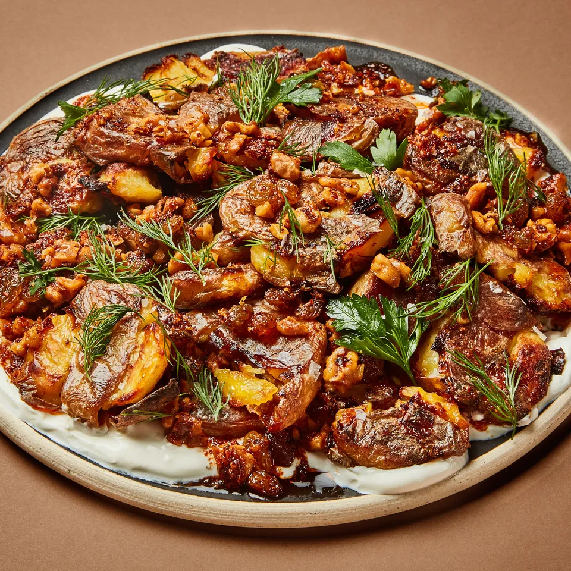

Crispy Smashed Potatoes

Description
Like a baked potato with crispy and crunchy elements, these crispy smashed potatoes from Bon Appetit are a meal unto themselves or a wonderful side.
Ingredients
- 2 lbs potatoes
- 1/3 cup olice oil
- salt
- pepper
- 1/2 cup chopped walnuts
- 2 anchovy
- 1/3 cup olive oil
- 1 clove garlic
- 3 TBSP golden raisins
- 4 TSP Aleppo pepper
- salt
- sour cream
- herbs
- lemon wedges
Steps
- Simmer potatoes in salted boiling water for 15 minutes
- Drain potatoes and allow them to slightly cool
- Place potatoes on baking sheet and SMASH
- Add 1/3 cup olive oil, salt, and pepper to the potatoes
- Bake potatoes at 450 degrees until brown and crispy, about 35-40 minutes
- In a saucepan, combine 1/2 cup of chopped walnuts, 2 anchovy, and 1/3 cup of olive oil
- Cook until walnuts are golden brown and anchovy disintegrate, about 6-8 minutes
- Transfer walnut sauce to a bowl to cease cooking
- To walnut sauce, add 1 clove garlic, 3 TBSP golden raisins, and 4 TSP Allepo pepper
- Serve potatoes with walnut sauce, sour cream, herbs, and lemon wedges